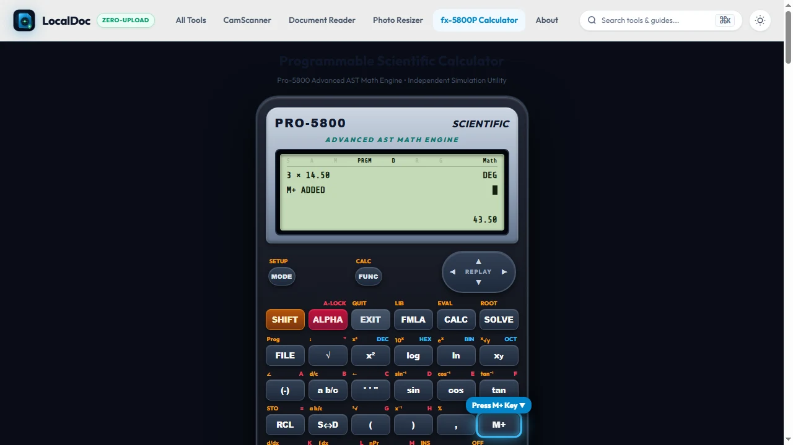
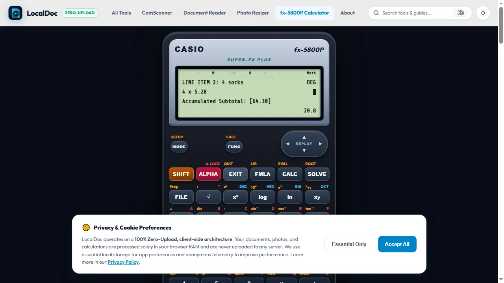
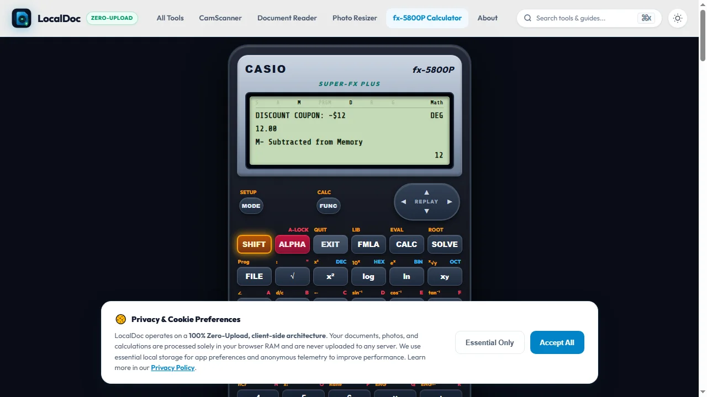
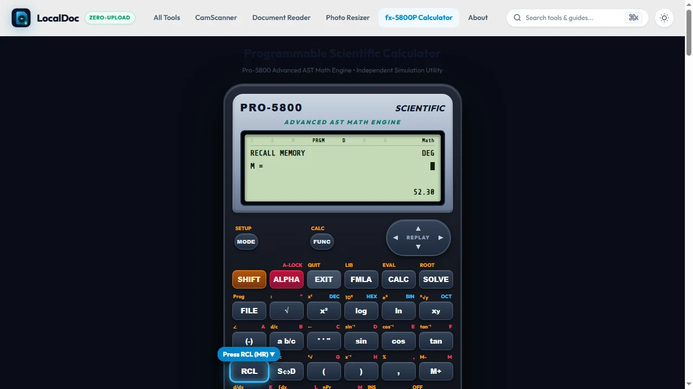

How to Use Calculator Memory Keys: M+, M-, MR, MC & STO Step-by-Step Guide
Stop scrambling for scrap paper to write down intermediate numbers. Master the independent memory accumulator keys on standard desk and scientific calculators. Learn what M+, M−, MR, and MC mean, how to solve chained receipts, and how to banish the stubborn "M" icon from your Casio screen.
🧮 Try Memory Calculations in Real-Time
Open the free LocalDoc scientific calculator simulator to test M+, M-, MR, and STO variable registers in your browser.
What Do the Memory Keys Mean on a Calculator?
Calculator memory acts like a hidden, secondary clipboard that stores a running cumulative total without altering your main calculation screen:
| Button | Full Name | What It Does |
|---|---|---|
| M+ | Memory Add | Adds the number on your screen to the hidden memory total. |
| M− | Memory Subtract | Subtracts the number on your screen from the hidden memory total. |
| MR | Memory Recall | Displays the accumulated memory value on your screen without deleting it. |
| MC | Memory Clear | Erases the hidden memory total back to zero (and turns off the screen "M" icon). |
| MRC | Memory Recall / Clear | Press once to Recall (MR); press a second time immediately to Clear (MC). |
| STO | Store Variable | Saves the current result into variable registers (A, B, C, D, X, Y, or M). |
1. The Golden Rule of Calculator Memory
When performing calculations with multiple parts, most people reach for a pen and write down intermediate numbers like 43.50, 20.80, and 12.00 on scrap paper, only to re-type them minutes later. This wastes time and introduces catastrophic transcription errors.
Calculator memory acts as an accumulator. Think of it as an invisible piggy bank: every time you press M+, you deposit money into the bank. Every time you press M−, you withdraw money. When you want to see the balance, you tap MR.
2. Visual Step-by-Step Walkthrough: Calculating a Multi-Line Invoice / Receipt
Suppose you are calculating the total cost of an order with multiple line items and a coupon discount:
- 3 T-shirts at $14.50 each
- 4 pairs of socks at $5.20 each
- Less a promotional coupon discount of $12.00
Follow the 5-step visual walkthrough below to execute this multi-line calculation directly inside the calculator's independent memory accumulator without recording intermediate figures on scrap paper:
Clear Existing Memory (MC / 0 → STO M)
Ensure the memory accumulator is cleared to 0.00. On office desk calculators, tap MC or double-tap MRC. On Casio scientific calculators, store zero by pressing 0 → SHIFT → RCL (STO) → M+ (M). Verify that the [M] icon is gone from the top display bar.
Add First Item Subtotal (3 × 14.50 M+)
Type 3 × 14.50 and press the green M+ button instead of equals. The screen computes 43.5, deposits it into the hidden accumulator, and turns on the permanent [M] icon.

Accumulate Second Item Subtotal (4 × 5.20 M+)
Enter 4 × 5.20 directly and tap M+ again. The display displays 20.8, and the memory accumulator silently sums the two lines: 43.50 + 20.80 = 64.30.

Subtract Coupon Discount (12.00 M−)
Type the coupon discount amount 12.00 and press M− (or SHIFT then M+ on Casio). The accumulator immediately reduces its running total from 64.30 − 12.00 = 52.30.

Recall Grand Total via MR (52.30)
Press MR (Memory Recall) or RCL then M. The exact net payable invoice total 52.30 is recalled to the LCD display with 100% precision.

3. Solving Complex Rational Fractions Without Scrap Paper
In science, engineering, and mathematics exams, you will frequently encounter fractions with messy polynomials in both numerator and denominator:
Here is how to solve it in under 15 seconds without losing decimal accuracy:
- Calculate the denominator first: Type
78.3 - 19.85 = 58.45. - Store it in memory: Press M+ (or SHIFT RCL A on Casio).
- Clear the screen by pressing AC (the memory remains safe!).
- Calculate the numerator: Type
148.6 × 32.4 + 92.1 = 4906.74. - Divide by memory: Press ÷ then MR (or RCL A) and tap =.
- Result:
83.94764756— exact, instantaneous, zero scratch paper.
4. How to Clear the "M" on Casio Scientific Calculators
On simple desk calculators, you simply press MC. But look at a Casio fx-83GTX, fx-85GTX, or fx-991EX: There is no MC button!
Because students don't know how to clear it, the "M" icon stays on screen for months, corrupting every future calculation where M+ is tapped.
The 3-Second Casio Memory Clear Trick:
To clear memory on any Casio scientific calculator, store zero into the M register:
The screen will display 0 → M and the small "M" icon in the top header will instantly vanish.
5. MR vs. Ans: What Is the important Difference?
A common question asked by high school and college students is: "Why should I bother with MR when my calculator already has an Ans key?"
| Feature | Ans Key (Last Answer) | MR Key (Independent Memory) |
|---|---|---|
| Persistence | Volatile (Overwritten on every = press) |
Permanent (Retains value indefinitely) |
| Power Off Behavior | Erased when power cycles or turns off | Saved in non-volatile RAM on modern Casio/TI |
| Accumulation | Single number only (cannot add or subtract) | Can accumulate multiple sums via M+ and M− |
| Accidental Overwrite | Extremely High (Tapping 2 + 2 = wipes out previous Ans) |
Zero (Only modified when you press M+, M−, or STO M) |
📚 Complete Scientific Calculator Cluster
Continue expanding your calculation fluency with our accompanying guides:
The comprehensive dictionary of every button: ENG, HYP, Pol, Rec, powers, and statistical symbols.
Year 7–11 guide: Why to ignore HYP, the 3-second exam reset, S<=>D, and DEG/RAD angle fixes.
Frequently Asked Questions: Calculator Memory
0 → SHIFT → RCL → M+.
Practical Applications: Multi-Step Cost Accounting & Surveying Chainage
Case 1: Multi-Item Invoice with Subtotals & Discounts (Cost Accounting)
Consider an accounting audit where you must sum distinct item batches while deducting promotional vouchers, without handwriting scratch numbers:
- Batch A: 14 units × 32.50 =
14 × 32.50 [M+](Accumulates 455.00) - Batch B: 8 units × 120.00 =
8 × 120 [M+](Accumulates 960.00, running total $1,415.00) - Deduction: Trade discount voucher 175.00 =
175 [M−](Deducts 175.00) - Batch C: 25 units × 14.20 =
25 × 14.20 [M+](Accumulates 355.00) - Net Invoice Total: Press
[MR]→ $1,595.00
Case 2: Cumulative Surveying Chainage Across Road Alignments
In civil highway surveying, technicians determine running chainages along route centerlines. Rather than re-adding previous stations, memory registers track cumulative chainage:
1250 [M+] → Memory holds 1250.00m2. First Tangent Run (Segment length 342.65m):
342.65 [M+] • Press [MR] → Station 1592.65m (Chainage 15+92.65)3. Horizontal Curve Arc Run (Curve length L = 184.30m):
184.30 [M+] • Press [MR] → Station 1776.95m (Chainage 17+76.95)4. Reverse Stationing Offset Correction (−15.20m):
15.20 [M−] • Press [MR] → Final Station 1761.75m
Legal & Trademark Notice:
CASIO® is a registered trademark of Casio Computer Co., Ltd. LocalDoc is an independent engineering platform and is not affiliated with, sponsored by, or endorsed by Casio Computer Co., Ltd.